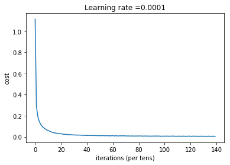

MNIST-data set digit recognition
I recently discovered Andrew Ng's new Deep Learning specialization on coursera and dove right in. His teaching style is an absolute match for me: start with the basics, understanding every detail and then move on gradually to more and more complex topics. It's not for everyone, I agree, as many people do not have the patience to learn how the car works before learning to drive. But driving while thinking it's all just magic is half as fun.
Part of the specialization is learning to use TensorFlow. A dream come true, as I have so far always used deep learning frameworks like keras, which use TensorFlow in the backend, and I always wanted to get to code in the real thing. Don't take me wrong, keras is amazing! It makes building neural networks really easy. But using TensorFlow you really have to think about what you are doing in order for it to work. And that means that you learn much more!
So let's get to it. I decided to build a first simple neural network using TensorFlow to solve the classic MNIST digit recognition problem.
import math
import numpy as np
import h5py
import matplotlib.pyplot as plt
import pandas as pd
import tensorflow as tf
from tensorflow.python.framework import ops
from sklearn.model_selection import train_test_split
%matplotlib inline
np.random.seed(1)
Loading the data
The set consists of 28x28pixels grayscale pictures of handdrawn digits. There are 42000 pictures in the train set and 28000 in the test set. Only the train set has corresponding labels (digit encoded from 0 to 9).
# Loading the dataset
#X_train_orig, Y_train_orig, X_test_orig, Y_test_orig, classes = load_dataset()
train_orig = pd.read_csv('train.csv')
test_orig = pd.read_csv('test.csv')
print('Train set shape:', train_orig.shape)
print('Test set shape:', test_orig.shape)
Train set shape: (42000, 785)
Test set shape: (28000, 784)
I now separate the labels from the features in the train set to get X_train_orig and Y_train_orig.
X_train_orig = train_orig.iloc[:,1:]
Y_train_orig = train_orig.iloc[:,0]
X_test_orig = test_orig
X_train_orig.shape, Y_train_orig.shape, X_test_orig.shape
((42000, 784), (42000,), (28000, 784))
Since I do not have the labels of the test set, but I do need to estimate how well my neural network is performing, I decided to split my train set in proper train and validation sets. I use 20% of the train data as validation to check for accuracy later in the script.
X_train, X_val, Y_train, Y_val = train_test_split(X_train_orig, Y_train_orig, test_size=0.20, random_state=42)
X_train.shape, X_val.shape, Y_train.shape, Y_val.shape
((33600, 784), (8400, 784), (33600,), (8400,))
The data doesn't need too much preprocessing, as the images have already been flattened out into vectors. I only perform normalization of the grayscale values and one-hot encode the Y labels.
# Normalize features
X_train = X_train.T/255.
X_val = X_val.T/255.
X_test = X_test_orig.T/255.
# One-hot encode labels
Y_train = pd.get_dummies(Y_train).T
Y_val = pd.get_dummies(Y_val).T
print ("number of training examples = " + str(X_train.shape[1]))
print ("number of validation examples = " + str(X_val.shape[1]))
print ("number of test examples = " + str(X_test.shape[1]))
print ("X_train shape: " + str(X_train.shape))
print ("X_val shape: " + str(X_val.shape))
print ("Y_train shape: " + str(Y_train.shape))
print ("Y_val shape: " + str(Y_val.shape))
print ("X_test shape: " + str(X_test.shape))
number of training examples = 33600
number of validation examples = 8400
number of test examples = 28000
X_train shape: (784, 33600)
X_val shape: (784, 8400)
Y_train shape: (10, 33600)
Y_val shape: (10, 8400)
X_test shape: (784, 28000)
Define helper functions
Now it's time to define some useful functions that can be later put together easily when building the deep learning model.
Create placeholders for data input
These are the placeholders where the input data will be later entered into the model.
def create_placeholders(n_x, n_y):
"""
Creates the placeholders for the tensorflow session.
Arguments:
n_x -- scalar, size of an image vector (num_px * num_px = 64 * 64 * 3 = 12288)
n_y -- scalar, number of classes (from 0 to 5, so -> 6)
Returns:
X -- placeholder for the data input, of shape [n_x, None] and dtype "float"
Y -- placeholder for the input labels, of shape [n_y, None] and dtype "float"
Tips:
- You will use None because it let's us be flexible on the number of examples you will for the placeholders.
In fact, the number of examples during test/train is different.
"""
X = tf.placeholder(tf.float32, shape=(n_x, None), name='X')
Y = tf.placeholder(tf.float32, shape=(n_y, None), name='Y')
return X, Y
Initialize parameters
Before starting learning, we initialize the weights of the network appropriately. This is where the number of layers and the number of hidden units is defined. In this case I will build a 3-layered network with 100, and 50 hidden units, plus 10 output units (for the 0-9 digit classes).
def initialize_parameters():
"""
Initializes parameters to build a neural network with tensorflow.
Returns:
parameters -- a dictionary of tensors containing W1, b1, W2, b2, W3, b3
"""
tf.set_random_seed(1)
W1 = tf.get_variable('W1', [100, 784], initializer= tf.contrib.layers.xavier_initializer(seed=1))
b1 = tf.get_variable('b1', [100,1], initializer= tf.zeros_initializer())
W2 = tf.get_variable('W2', [50,100], initializer=tf.contrib.layers.xavier_initializer(seed=1))
b2 = tf.get_variable('b2', [50,1], initializer= tf.zeros_initializer())
W3 = tf.get_variable('W3', [10,50], initializer=tf.contrib.layers.xavier_initializer(seed=1))
b3 = tf.get_variable('b3', [10,1], initializer= tf.zeros_initializer())
parameters = {"W1": W1,
"b1": b1,
"W2": W2,
"b2": b2,
"W3": W3,
"b3": b3}
return parameters
Define forward propagation
The key to building the model in TensorFlow is to define the forward propagation computation.
There are three basic steps to be performed per layer: 1) Calculate the Z vectors by matrix multiplication of weights and input from previous layer 2) Calculate the activation (A) vectors by using an activation function, in this case relu 3) Optional (but in this case essential): apply dropout where needed in order to introduce regularization in the network and prevent overfitting.
Only the Z vector of the output layer we leave as is without the activation function.
def forward_propagation(X, parameters, keep_prob):
"""
Implements the forward propagation for the model: LINEAR -> RELU -> LINEAR -> RELU -> LINEAR -> SOFTMAX
Arguments:
X -- input dataset placeholder, of shape (input size, number of examples)
parameters -- python dictionary containing your parameters "W1", "b1", "W2", "b2", "W3", "b3"
the shapes are given in initialize_parameters
Returns:
Z3 -- the output of the last LINEAR unit
"""
# Retrieve the parameters from the dictionary "parameters"
W1 = parameters['W1']
b1 = parameters['b1']
W2 = parameters['W2']
b2 = parameters['b2']
W3 = parameters['W3']
b3 = parameters['b3']
Z1 = tf.matmul(W1, X) + b1 # Z1 = np.dot(W1, X) + b1
A1 = tf.nn.relu(Z1) # A1 = relu(Z1)
A1 = tf.nn.dropout(A1, keep_prob)
Z2 = tf.matmul(W2, A1) + b2 # Z2 = np.dot(W2, a1) + b2
A2 = tf.nn.relu(Z2) # A2 = relu(Z2)
A2 = tf.nn.dropout(A2, keep_prob)
Z3 = tf.matmul(W3, A2) + b3 # Z3 = np.dot(W3,Z2) + b3
return Z3
The output of the last layer (Z3) will be used to compute the cost of the model using softmax cross entropy function.
def compute_cost(Z3, Y):
"""
Computes the cost
Arguments:
Z3 -- output of forward propagation (output of the last LINEAR unit), of shape (6, number of examples)
Y -- "true" labels vector placeholder, same shape as Z3
Returns:
cost - Tensor of the cost function
"""
# to fit the tensorflow requirement for tf.nn.softmax_cross_entropy_with_logits(...,...)
logits = tf.transpose(Z3)
labels = tf.transpose(Y)
cost = tf.reduce_mean(tf.nn.softmax_cross_entropy_with_logits(logits=logits, labels=labels))
return cost
Now we need a mini-batch generation function, in order to use mini-batch gradient descent instead of batch gradient descent.
def random_mini_batches(X, Y, mini_batch_size = 64, seed = 0):
"""
Creates a list of random minibatches from (X, Y)
Arguments:
X -- input data, of shape (input size, number of examples)
Y -- true "label" vector (containing 0 if cat, 1 if non-cat), of shape (1, number of examples)
mini_batch_size - size of the mini-batches, integer
seed
Returns:
mini_batches -- list of synchronous (mini_batch_X, mini_batch_Y)
"""
m = X.shape[1] # number of training examples
mini_batches = []
np.random.seed(seed)
# Step 1: Shuffle (X, Y)
permutation = list(np.random.permutation(m))
shuffled_X = X[:, permutation]
shuffled_Y = Y[:, permutation].reshape((Y.shape[0],m))
# Step 2: Partition (shuffled_X, shuffled_Y). Minus the end case.
num_complete_minibatches = math.floor(m/mini_batch_size) # number of mini batches of size mini_batch_size in your partitionning
for k in range(0, num_complete_minibatches):
mini_batch_X = shuffled_X[:, k * mini_batch_size : k * mini_batch_size + mini_batch_size]
mini_batch_Y = shuffled_Y[:, k * mini_batch_size : k * mini_batch_size + mini_batch_size]
mini_batch = (mini_batch_X, mini_batch_Y)
mini_batches.append(mini_batch)
# Handling the end case (last mini-batch < mini_batch_size)
if m % mini_batch_size != 0:
mini_batch_X = shuffled_X[:, num_complete_minibatches * mini_batch_size : m]
mini_batch_Y = shuffled_Y[:, num_complete_minibatches * mini_batch_size : m]
mini_batch = (mini_batch_X, mini_batch_Y)
mini_batches.append(mini_batch)
return mini_batches
To make the predictions we create another function that doesn't include dropout.
def predict(X, parameters):
W1 = tf.convert_to_tensor(parameters["W1"])
b1 = tf.convert_to_tensor(parameters["b1"])
W2 = tf.convert_to_tensor(parameters["W2"])
b2 = tf.convert_to_tensor(parameters["b2"])
W3 = tf.convert_to_tensor(parameters["W3"])
b3 = tf.convert_to_tensor(parameters["b3"])
params = {"W1": W1,
"b1": b1,
"W2": W2,
"b2": b2,
"W3": W3,
"b3": b3}
x = tf.placeholder("float", [784, None])
z3 = forward_propagation_for_predict(x, params)
p = tf.argmax(z3)
sess = tf.Session()
prediction = sess.run(p, feed_dict = {x: X})
return prediction
def forward_propagation_for_predict(X, parameters):
"""
Implements the forward propagation for the model: LINEAR -> RELU -> LINEAR -> RELU -> LINEAR -> SOFTMAX
Arguments:
X -- input dataset placeholder, of shape (input size, number of examples)
parameters -- python dictionary containing your parameters "W1", "b1", "W2", "b2", "W3", "b3"
the shapes are given in initialize_parameters
Returns:
Z3 -- the output of the last LINEAR unit
"""
# Retrieve the parameters from the dictionary "parameters"
W1 = parameters['W1']
b1 = parameters['b1']
W2 = parameters['W2']
b2 = parameters['b2']
W3 = parameters['W3']
b3 = parameters['b3']
# Numpy Equivalents:
Z1 = tf.add(tf.matmul(W1, X), b1) # Z1 = np.dot(W1, X) + b1
A1 = tf.nn.relu(Z1) # A1 = relu(Z1)
Z2 = tf.add(tf.matmul(W2, A1), b2) # Z2 = np.dot(W2, a1) + b2
A2 = tf.nn.relu(Z2) # A2 = relu(Z2)
Z3 = tf.add(tf.matmul(W3, A2), b3) # Z3 = np.dot(W3,Z2) + b3
return Z3
Build the model
Now I'm ready to build the model putting the pieces together. One more thing to define is the optimization algorith to be used, in this case Adam optimization. In the end, I will get an estimate of the accuracy of the model, a plot of the loss along the epochs and the learned parameters of the network.
def model(X_train, Y_train, X_test, Y_test, learning_rate = 0.0001,
num_epochs = 700, minibatch_size = 32, print_cost = True):
"""
Implements a three-layer tensorflow neural network: LINEAR->RELU->LINEAR->RELU->LINEAR->SOFTMAX.
Arguments:
X_train -- training set, of shape (input size = 12288, number of training examples = 1080)
Y_train -- test set, of shape (output size = 6, number of training examples = 1080)
X_test -- training set, of shape (input size = 12288, number of training examples = 120)
Y_test -- test set, of shape (output size = 6, number of test examples = 120)
learning_rate -- learning rate of the optimization
num_epochs -- number of epochs of the optimization loop
minibatch_size -- size of a minibatch
print_cost -- True to print the cost every 100 epochs
Returns:
parameters -- parameters learnt by the model. They can then be used to predict.
"""
ops.reset_default_graph() # to be able to rerun the model without overwriting tf variables
tf.set_random_seed(1) # to keep consistent results
seed = 3 # to keep consistent results
(n_x, m) = X_train.shape # (n_x: input size, m : number of examples in the train set)
n_y = Y_train.shape[0] # n_y : output size
costs = [] # To keep track of the cost
# Create Placeholders of shape (n_x, n_y)
X, Y = create_placeholders(n_x, n_y)
keep_prob = tf.placeholder(tf.float32, name='keep_prob')
# Initialize parameters
parameters = initialize_parameters()
# Forward propagation: Build the forward propagation in the tensorflow graph
Z3 = forward_propagation(X, parameters, keep_prob)
# Cost function: Add cost function to tensorflow graph
cost = compute_cost(Z3, Y)
# Backpropagation: Define the tensorflow optimizer. Use an AdamOptimizer.
optimizer = tf.train.AdamOptimizer(learning_rate=learning_rate).minimize(cost)
# Initialize all the variables
init = tf.global_variables_initializer()
# Start the session to compute the tensorflow graph
with tf.Session() as sess:
# Run the initialization
sess.run(init)
# Do the training loop
for epoch in range(num_epochs):
epoch_cost = 0. # Defines a cost related to an epoch
num_minibatches = int(m / minibatch_size) # number of minibatches of size minibatch_size in the train set
seed = seed + 1
minibatches = random_mini_batches(X_train, Y_train, minibatch_size, seed)
for minibatch in minibatches:
# Select a minibatch
(minibatch_X, minibatch_Y) = minibatch
# IMPORTANT: The line that runs the graph on a minibatch.
# Run the session to execute the "optimizer" and the "cost", the feedict should contain a minibatch for (X,Y).
### START CODE HERE ### (1 line)
_ , minibatch_cost = sess.run([optimizer, cost], feed_dict={X: minibatch_X, Y:minibatch_Y,
keep_prob:0.8})
### END CODE HERE ###
epoch_cost += minibatch_cost / num_minibatches
# Print the cost every epoch
if print_cost == True and epoch % 100 == 0:
print("Cost after epoch %i: %f" % (epoch, epoch_cost))
if print_cost == True and epoch % 5 == 0:
costs.append(epoch_cost)
# plot the cost
plt.plot(np.squeeze(costs))
plt.ylabel('cost')
plt.xlabel('iterations (per tens)')
plt.title("Learning rate =" + str(learning_rate))
plt.show()
# lets save the parameters in a variable
parameters = sess.run(parameters)
print("Parameters have been trained!")
# Calculate the correct predictions
correct_prediction = tf.equal(tf.argmax(Z3), tf.argmax(Y))
# Calculate accuracy on the test set
accuracy = tf.reduce_mean(tf.cast(correct_prediction, "float"))
print("Train Accuracy:", accuracy.eval({X: X_train, Y: Y_train, keep_prob:1.0}))
print("Test Accuracy:", accuracy.eval({X: X_test, Y: Y_test, keep_prob:1.0}))
return parameters
Run the model
I run the model using the the train and validation data.
parameters = model(X_train.values, Y_train.values, X_val.values, Y_val.values)
Cost after epoch 0: 1.115009
Cost after epoch 100: 0.030470
Cost after epoch 200: 0.013285
Cost after epoch 300: 0.011700
Cost after epoch 400: 0.008449
Cost after epoch 500: 0.006801
Cost after epoch 600: 0.005505

Parameters have been trained!
Train Accuracy: 1.0
Test Accuracy: 0.972262
Interpretation
Although the neural network is clearly overfitting the training set, by adding dropout to the layers, I could increase the accuracy from 94% to 97%. Keeping in mind, that this is a "normal", densely connected network without convolution, it is a very good result. I expect that a convolutional NN would be able to reach a higher accuracy.
Make predictions and submit to kaggle
...to get our performance on the untouched test set
prediction = predict(X_test, parameters)
prediction
array([2, 0, 9, ..., 3, 9, 2], dtype=int64)
submission = pd.DataFrame(columns=['ImageId','Label'])
submission['ImageId'] = list(range(1, X_test.shape[1]+1))
submission['Label'] = prediction
submission.to_csv('submission3.csv', index=False)
print('Result from Kaggle was: Your submission scored 0.97114')
Result from Kaggle was: Your submission scored 0.97114
And that's all! I have created a 2-layered neural network that recognizes hand-written digits with a 97% accuracy (from validation and test sets).